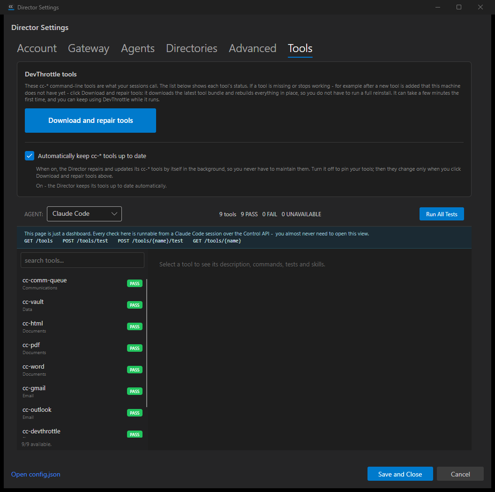
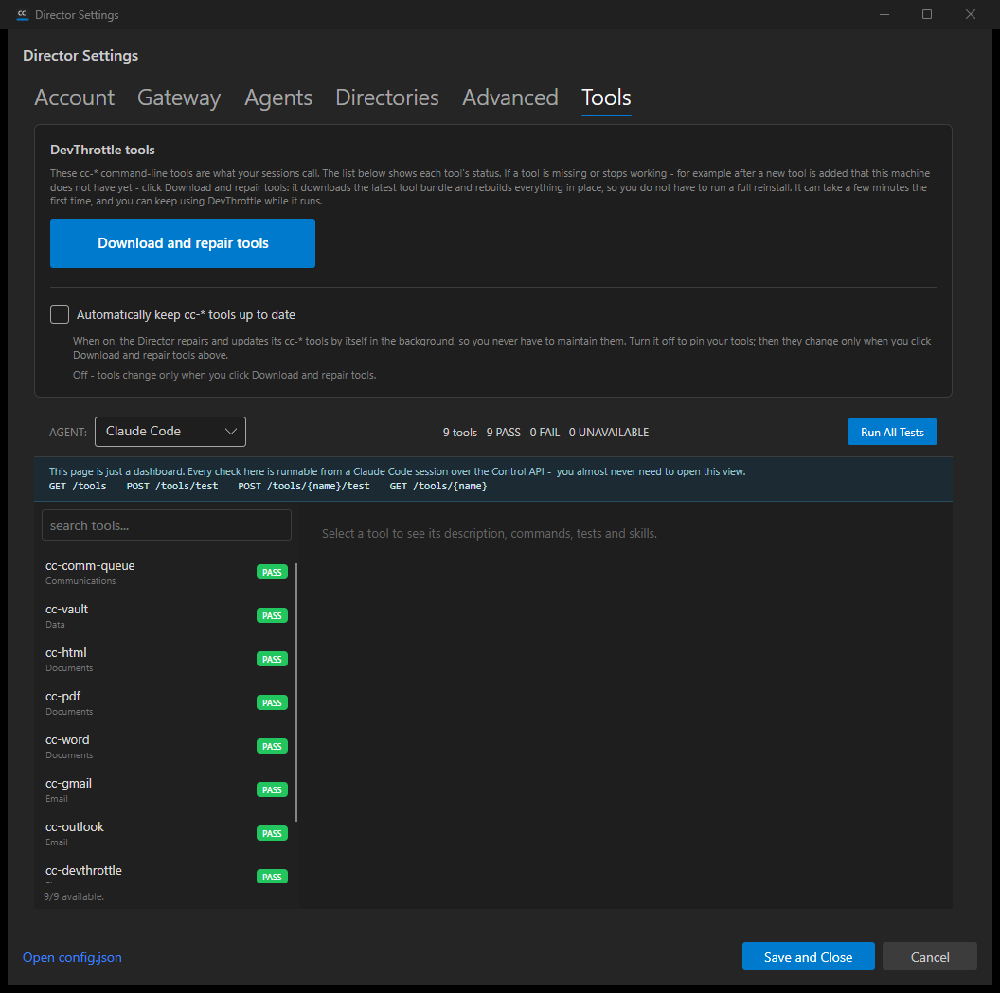

Tools settings page opt-out toggle "Automatically keep cc-* tools up to date" (ON by default),
bound to config key tools.autoUpdate.enabled. PR #834, branch
issue-828-tools-autoupdate-toggle at commit 8f76696. Independently verified by the QA
Agent in its own worktree on its own isolated slot 17 Director (Control API port 7883). The QA
session did NOT reuse the developer's binary or screenshots.
| # | Criterion | Expected | Actual | Result |
|---|---|---|---|---|
| 1 | Tools tab shows a plain-English toggle + helper line | Checkbox "Automatically keep cc-* tools up to date" with explanatory helper text in the Tools card | Present: checkbox plus helper line "When on, the Director repairs and updates its cc-* tools by itself in the background..." plus live status line (see qa-tools-default-on.png) | PASS |
| 2 | Reflects/writes tools.autoUpdate.enabled; default ON; persists immediately; survives restart |
Checked when key true/absent; toggling off writes false immediately and survives an app restart | No key in config.json -> shown checked (default ON). Toggling off wrote tools.autoUpdate.enabled:false to config/config.json within ~4ms; after a full Director stop+relaunch the toggle re-loaded UNCHECKED (qa-tools-off-after-restart.png). Unrelated sections (gateway, top-level autoUpdate self-update) preserved. |
PASS |
| 3 | OFF suppresses automatic reconciles; manual button still works | With key false the lifecycle reconcile does not run; "Download and repair tools" works regardless | Restarted Director log: [ToolAutoUpdate] startup: tools.autoUpdate.enabled=false; skipping tool reconcile (same key the #827 gate reads via ToolAutoUpdateConfig.Load). Manual button handler BtnFixTools_Click calls RepairPythonToolsAsync unconditionally (ungated by the toggle) and is enabled. |
PASS |
| 4 | VisualStyle.md compliance + immediate feedback | Placement/labelling/spacing consistent with the Settings dialog; instant visual response | Control sits in the Tools card under a separator border, reuses the existing "hint" text class and dark-theme tokens (#CCCCCC / #888888), 24px indent. Status line flips to "On - ..." / "Off - ..." instantly on toggle before the disk write completes. | PASS |
| 5 | Logging records toggle changes | FileLog entry on each on/off change | Director log: AutoUpdateToolsCheck_Changed: tools.autoUpdate.enabled -> False and persisted tools.autoUpdate.enabled=False. |
PASS |
| 6 | Build clean, tests pass, view-model default-true test | dotnet build cc-director.sln clean; new VM-level test for default true |
Build: 0 Warning(s) / 0 Error(s). ToolAutoUpdateSettingTests: 7/7 pass (incl. default-true, missing/non-bool -> on, explicit false -> off, persistence round-trip, preserves unrelated sections). Full Core.Tests regression: 2616 passed, 0 failed, 6 skipped. | PASS |
| 7 | Proven in the running app; persisted off after restart | Screenshot default-on, toggle off, restart, confirm persisted off | qa-tools-default-on.png (default checked) and qa-tools-off-after-restart.png (unchecked after a full restart) captured from the QA-built slot 17 Director. | PASS |
Tools tab - toggle ON by default (no config key present):

Tools tab after toggling off and a full Director restart - persisted OFF:
